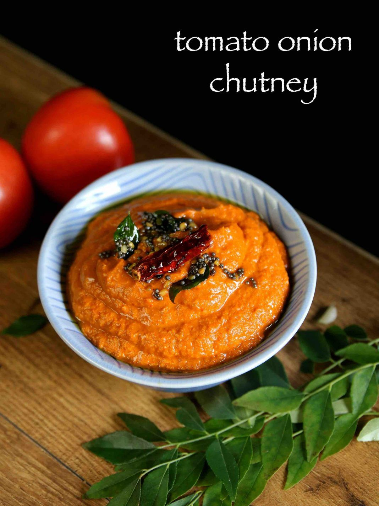

Onion Tomato Chutney

Description
This is another favourite south Indian recipes for idli, dosa.
It's super easy to make and it is such a yummy recipe which goes well
with any south Indian breakfast.
Ingredients
- Red Onion - 1 large
- Tomato - 2
- Red Chilies - 4
- salt and water - as required
- Oil - 2 table spoons
- Mustard Seeds - 1/4 teaspoon
- Urad Dal - 1/4 teaspoon
- Curry Leaves - a few
Steps
- Dice onion, tomato to small pieces
- Heat a pan with oil, add mustard seeds, red chilies, urad dal as they splatter add curry leaves
- Now add onions first and saute well.
- once onion cooks , add tomato and cook well.
- Once tomato cooks well, just let everything cool
- After it cools, grind in a mixer with salt and less water.
- Thats it we are done with this chutney, serve with hot idlis or dosas